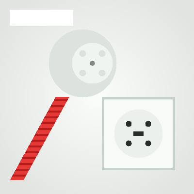

Perilex of kookgroep aansluiten, vaste prijs vooraf.
Overstappen op inductie of een nieuw fornuis? INO sluit je perilex stopcontact of kookgroep veilig aan — met een vaste prijs die je al kent voordat we beginnen.

Perilex stekker aansluiten
Alleen het aansluiten van de perilex stekker en het apparaat (inductiekookplaat of fornuis) op een al bestaande, werkende perilex wandcontactdoos.
- ✓ Aansluiting & fases doormeten
- ✓ Perilex stekker monteren
- ✓ Aansluiten volgens fabrikantschema (2-fase of 3-fase)
- ✓ Testen op vol vermogen & oplevering
- ✓ Garantie op de installatie
Perilex leiding & groep trekken
Complete perilex leiding en kabel trekken vanaf de groepenkast naar de keuken of zolder (voor inductie kookplaat of mechanische ventilatie).
- ✓ Bekabeling trekken (loze leiding)
- ✓ Perilex wandcontactdoos plaatsen
- ✓ Geschikt voor inductie of mechanische ventilatie
- ✓ Aansluiting in meterkast / kookgroep
- ✓ Doormeten en NEN 1010 oplevercheck
Prijs is afhankelijk van leidinglengte en of de aardlekschakelaar/groep al aanwezig is in de kast. Stuur gerust een foto mee!
AanvragenSchouw op locatie?
Wil je dat we vooraf ter plaatse komen kijken naar de kabelroute, doorvoeren en groepenkast? Voor € 90 komen we langs, wat we 100% verrekenen bij uitvoering van de klus.
Schouw aanvragenPrijzen zijn incl. btw en gelden voor de beschreven standaardsituaties. Bij afwijkende werkzaamheden ontvang je altijd vooraf een prijsvoorstel.
Welke aansluiting heb je nodig?
| Aansluitvermogen kookplaat | Benodigde aansluiting |
|---|---|
| tot 3,7 kW | Eigen kookgroep 230 V, 16 A |
| 3,7 – 7,4 kW | Perilex 2-fase, 400 V |
| 7,4 – 11 kW | Perilex 3-fase, 400 V |
| meer dan 11 kW / fornuis met oven | Perilex 3-fase + eigen groep |
Indicatie. Volg altijd het typeplaatje en aansluitschema van de fabrikant — wij controleren dit bij je thuis.
2-fase of 3-fase?
Bij 2-fase verdelen we het vermogen over twee fasen — genoeg voor de meeste inductiekookplaten. Bij 3-fase (krachtstroom) spreiden we de belasting over drie fasen, ideaal voor zware toestellen of meerdere zware apparaten samen.
Twijfel je of je aansluiting geschikt is, of wil je inductie combineren met een laadpaal? Bekijk dan ook onze groepenkast-opties →.
Van controle tot veilig koken.
Aansluiting controleren
We bekijken je groepenkast, de beschikbare ruimte en het aansluitschema van je kookplaat of fornuis.
Kabel en groep aanleggen
Indien nodig leggen we een nieuwe kookgroep aan en trekken we de bekabeling naar de keuken.
Perilex monteren
We monteren het perilex stopcontact of de vaste aansluiting en sluiten je apparaat aan.
Testen en opleveren
We testen de aansluiting, leveren netjes op en geven garantie op het werk.
Perilex en kookgroep, uitgelegd.
Vraag een vaste prijs aan.
Stuur het typeplaatje van je kookplaat of fornuis mee, dan weet je vooraf wat het kost.